Status of iTPC Integration
into STAR Software Libraries
Dmitri Smirnov
Intro
- In 2018 the number of tracking layers in TPC is tripled in a single inner sector 20
- In 2019 all inner sectors of TPC are expected to be upgraded
- TPC group provided the code written by Yuri F., Irakli C., ...
- Irakli passed the changes to the S&C tracking experts for review and
integration in the STAR library
Goals
- Focus on real data reconstruction first and simulation later
- New code should produce the same results when run over old data and geometry models
- Make sure effects on track reconstruction is minimized when iTPC data
not used in 2018 samples
- Quantify the effect (if any) from the new geometry
Summary
- In 2018 tracking layers in sectors 20 (East) and 4 (West) are at
different radii and do not span the full length of TPC
- STAR tracking was not optimized for such configuration so, some
degradation in efficiency is expected near the membrane ($z = 0$)
- The new additions are fully backward compatible. Identical results observed when
running new code on old data
- iTPC hits can be used in track reconstruction
- By default iTPC hits are not used in tracking
Use iTpcIT option to enable iTPC tracking
This is similar to PxlIT, IstIT, and SstIT options for
tracking with HFT detectors
- Full iTPC support is introduced in release SL18e
- The tracking code is able to accomodate any configuration of installed iTPC sectors
- The following results are based on SL18e release
Expected Inefficiency in Run 18 Data
- We studied the effect of half-length layers in TPC by reconstructing
tracks with split Sti layers in non-iTPC data
- The effect shown below is exaggerated due to all layers being split
whereas in Run 18 only layers in sectors 4 and 20 will span half length of
TPC
- Red: Standard reconstruction (StiCA) with full-length TPC layers
Blue and Green: TPC layers split at $z = 0$ with StiCA and Sti respectively
2017 Sti TPC geometry
- In 2017 (and earlier) none of the Sti layers is split
- Full-length Sti layers shown with grey color
- Half-length layers with an edge at $z = 0$ shown with magenta and purple colors
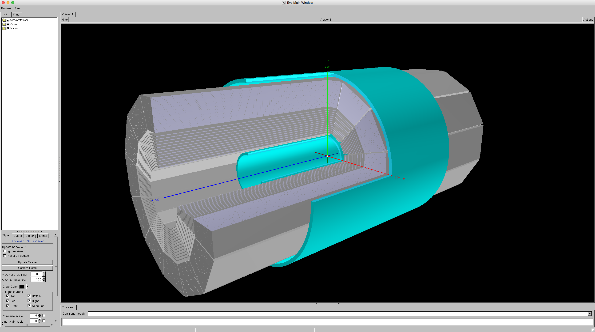
2018 Sti TPC geometry
- In 2018 only inner layers in sectors 4 and 20 are split
- Full-length Sti layers shown with grey color
- Half-length layers with an edge at $z = 0$ shown with magenta and purple colors

2019 Sti TPC geometry
- In 2019 all inner sectors instrumented with iTPC, none of the Sti layers is split
- Full-length Sti layers shown with grey color
- Half-length layers with an edge at $z = 0$ shown with magenta and purple colors
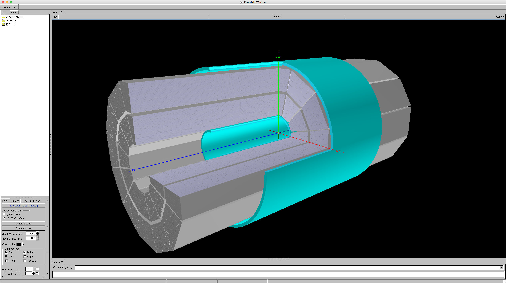
Further Notes
- TPC tracking layers extend from $-400$ to $+400$ cm in $z$ to accomodate
prompt hits. We plan to reduce the length without loosing the prompt hits in
tracking
- Simulation with iTPC is work in progress and not yet available in the
STAR library
- The event display pictures were produced with the star-travex package
available at
https://github.com/star-bnl/star-travex
- It can accept events in StEvent format from STAR event.root files
Number of Hits on Tracks
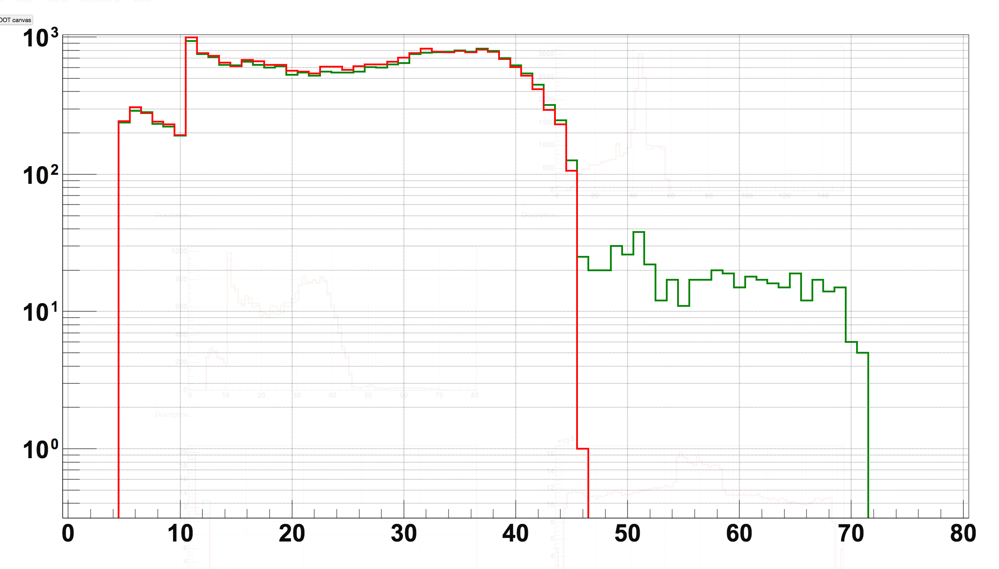
- iTPC hits can be used in tracking when iTpcIT option is enabled
- Some fraction of tracks in 2018 data has upto 72 assigned hits as expected
Event Display

Event Display
- TPC geometry in 2018 with real data hits

Event Display
- TPC geometry in 2018 with several reconstructed tracks and their associated hits

Event Display
- TPC geometry in 2018 with real data hits
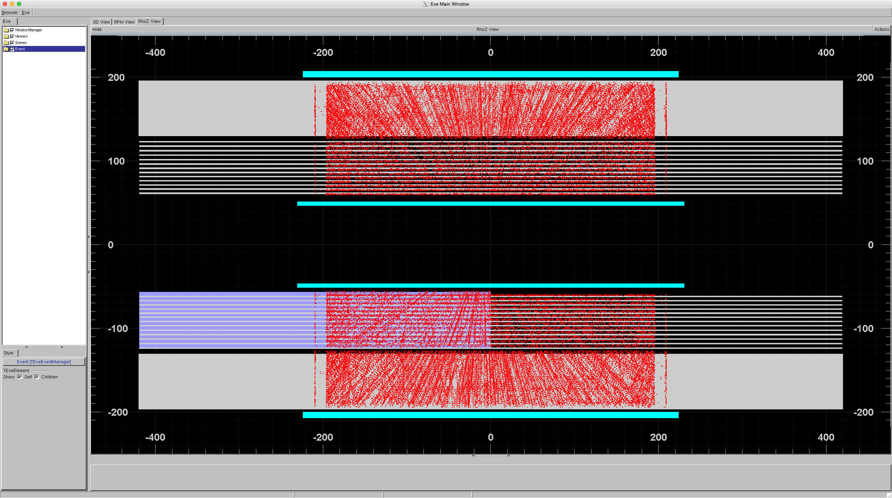
Event Display
- TPC geometry in 2018 with several reconstructed tracks and their associated hits
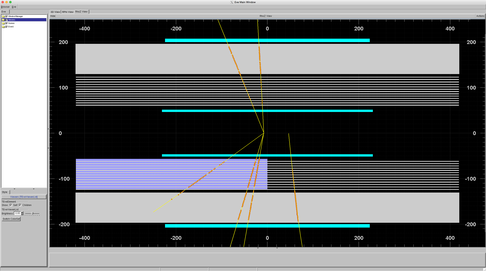
Possibility to Split Arbitrary Sti TPC Layer
- We added a new feature allowing to split arbitrary TPC layer in the Sti
geometry
- It is intended mainly for debugging and evaluating the effect of split
layers on tracking with Sti/StiCA
- The feature is activated by placing a text file in certain format in the
current directory
- The next slides illustrate split layers in three different geometries of
2017, 2018, and 2019. For example, we split the following:
- Layers 9 and 12 through 42 in sectors 3 and 21
- Layers 6 through 10 in sectors 12 and 24
Split Arbitrary Sti TPC Layers: 2017
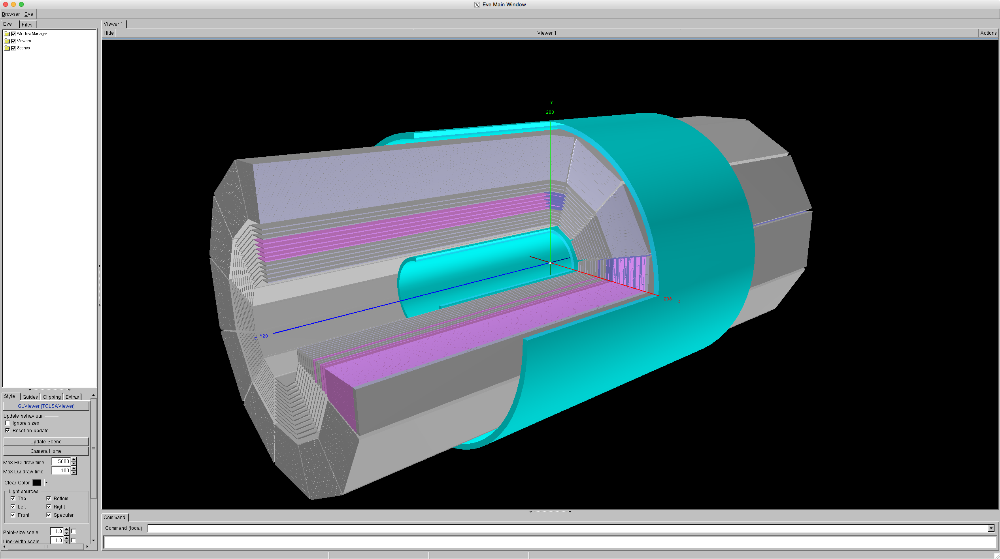
Split Arbitrary Sti TPC Layers: 2018
Split Arbitrary Sti TPC Layers: 2019
Historic Updates and Status Reports
Testing New Code: pre-2018 Case
- New code is expected to be backward compatible with pre-2018 data
- We test it by running the code over old data
- Use data from Runs 15 (pp 100 GeV), 16 (AuAu 100 Gev), and
17 (pp 250 GeV and AuAu 27 GeV), standard BFC options, 100 events
- Observed differences in number of tracks when comparing iTPC_IRAK_20180216b vs SL18b
- Small difference in the number of tracks (~10 tracks per event (1000s of tracks))
- Small difference in the vertex position (~100s microns) and number of vertices
- Investigated the problem and identified the change in StiTpc/StiTpcDetectorBuilder.cxx causing the difference:
- The length of TPC layers in Sti geometry was changed
TPC Geometry in SL18b and earlier
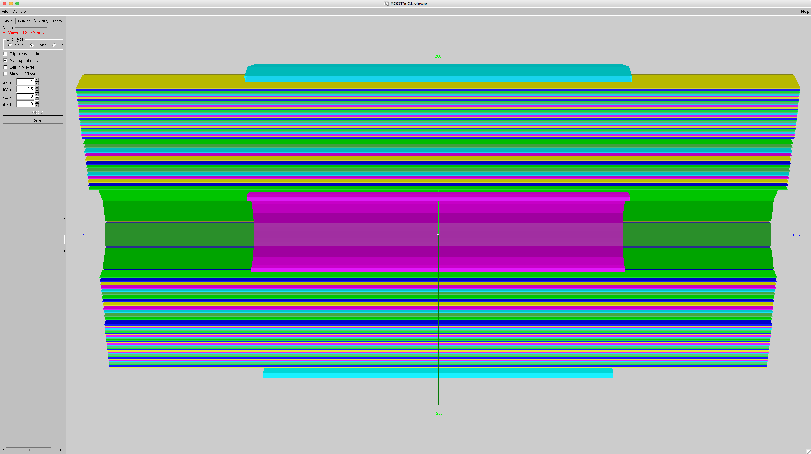
TPC Geometry for pre-2018 data on iTPC branch
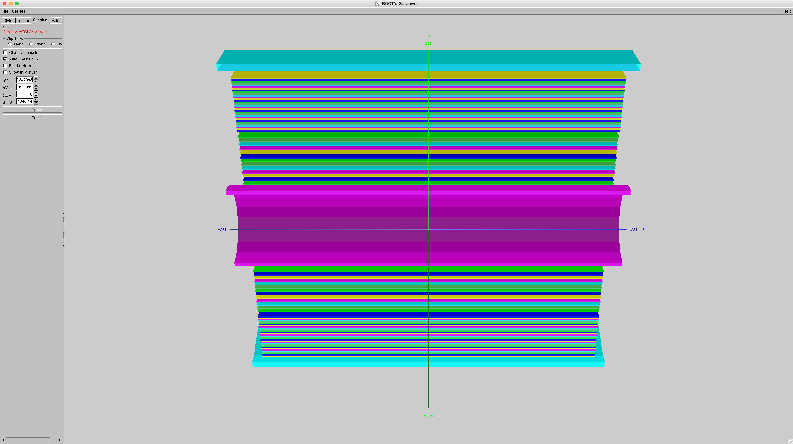
TPC Geometry for pre-2018 data on iTPC branch
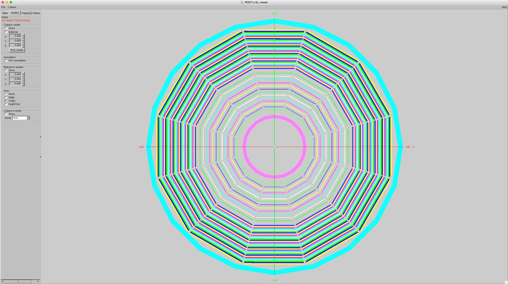
Testing and Solving Remaining Issues
- Pre-2018 geometry
- The difference in track counts disappears when we keep the double length
for TPC layers
- Gene identified the hits on tracks causing change in track counts as prompt hits
- It is suggested to keep the length of the TPC layers unchanged
- 2018 geometry
- We test the case when all TPC layers are split in half in the middle
to accomodate the increased number of layers in inner iTPC sectors 4 and
20
Revert Change on iTPC_IRAK_20180216b
--- a/StRoot/StiTpc/StiTpcDetectorBuilder.cxx
+++ b/StRoot/StiTpc/StiTpcDetectorBuilder.cxx
@@ -115,23 +115,19 @@ void StiTpcDetectorBuilder::useVMCGeometry() {
}
else {
pShape->setThickness(St_tpcPadConfigC::instance()->outerSectorPadLength(sector));
dZ = St_tpcPadConfigC::instance()->outerSectorPadPlaneZ(sector);
}
- if (NoStiSectors == 24) {
- pShape->setHalfDepth(dZ/2);
- } else {
- pShape->setHalfDepth(dZ);
- }
+ pShape->setHalfDepth(dZ*24/NoStiSectors);
pShape->setHalfWidth(St_tpcPadConfigC::instance()->PadPitchAtRow(sector,row) * St_tpcPadConfigC::instance()->numberOfPadsAtRow(sector,row) / 2.);
pShape->setName(name.Data()); if (debug>1) cout << *pShape << endl;
//Retrieve position and orientation of the TPC pad rows from the database.
StTpcLocalSectorDirection dirLS[3];
Testing New Code: 2018 Case
- To estimate the effect of TPC layer splitting we implement the same in SL18b
- Test using old TPC data
- Use data from Runs 15 (pp 100 GeV), 16 (AuAu 100 Gev), and
17 (pp 250 GeV and AuAu 27 GeV), standard BFC options, 100 events
- We observe track inefficiency in all data sets (see next slides)
TPC Geometry pre-2018
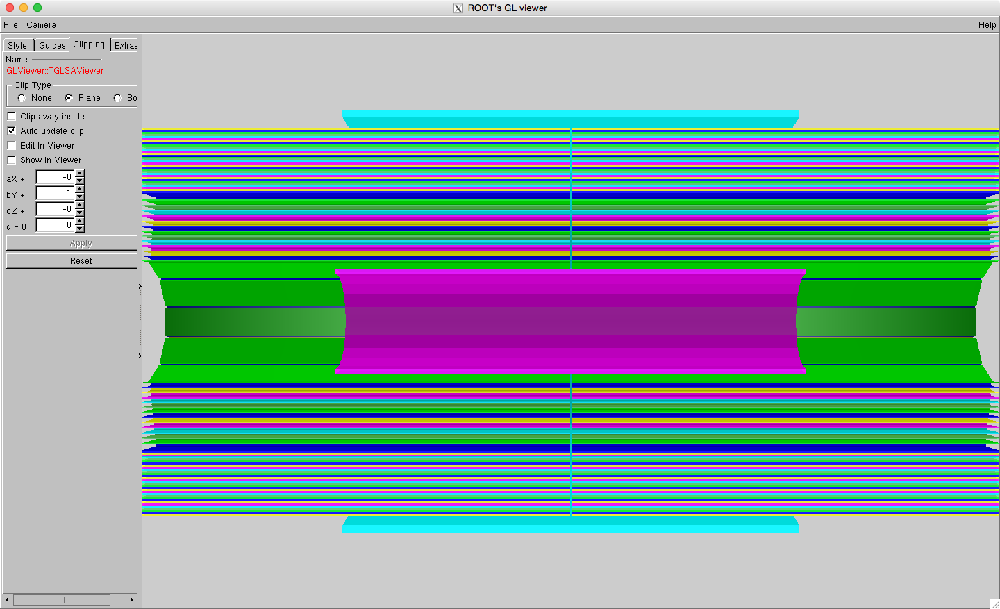
TPC Geometry pre-2018
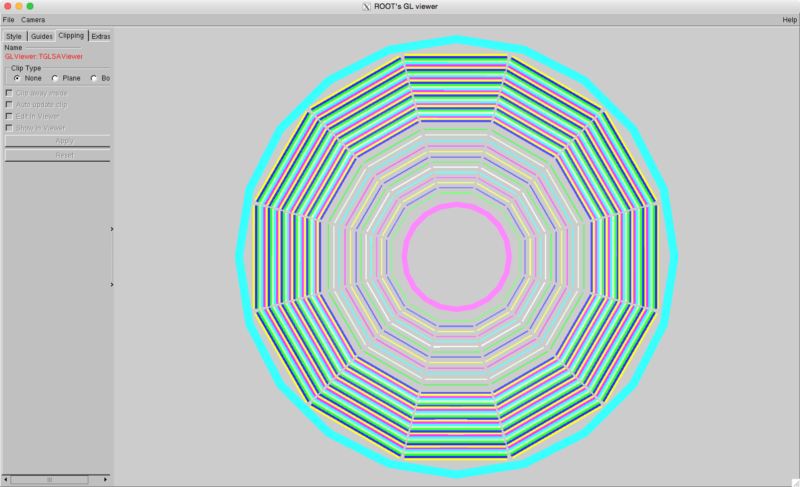
Inefficiency in Run 18168046
- Red: Non-split TPC layers, Blue: TPC layers split at z=0, Green: Sti only
Inefficiency in Run 18060107
- Red: Non-split TPC layers, Blue: TPC layers split at z=0, Green: Sti only
Inefficiency in Run 17072001
- Red: Non-split TPC layers, Blue: TPC layers split at z=0, Green: Sti only
Inefficiency in Run 16067017
- Red: Non-split TPC layers, Blue: TPC layers split at z=0, Green: Sti only
Proposals for Solving Issue with Tracking in 2018
- The tracks crossing TPC layers near the boundary will never see hits in
the other half at the same radial layer
- Two solutions proposed:
- Solution 1: Re-assign hits close to volume boundary to the neighboring volume
- This is a good direct way of addressing the issue
- Victor is working on this solution
- Dmitri will test when available
- Solution 2: Don't split TPC layers except inner sectors
4 and 20
- Can be quickly implemented
- Will not solve the problem in the iTPC sector
- May be considered as a back-up plan to Solution 1
Summary
- The new code appears to be ready for reconstruction of pre-2018 data
without iTPC
- Tested 2018 case with split TPC layers and compared to default non-split case
using old data
- A significant loss in track efficiency is observed
- Victor is working on the code to eliminate boundary effects in split
Sti Layers
- Gene has working code for StEvent topology map extended for
iTPC by Thomas and the code to fill it
- Also...
- xml implementation of iTPC geometry (essential for iTPC simulation)
is work in progress by Irakli and Jason
Run 18168046: With Victor's suggestion
- Red: Non-split TPC layers, Blue: TPC layers split at z=0, Green: Victor's fix
Run 18060107: With Victor's suggestion
- Red: Non-split TPC layers, Blue: TPC layers split at z=0, Green: Victor's fix
Run 16067017: With Victor's suggestion
- Red: Non-split TPC layers, Blue: TPC layers split at z=0, Green: Victor's fix
Summary
- Tested code to eliminate boundary effects provided by Victor
- The loss in efficiency is not recovered
Observations from Additional Tests
- Set Sti TPC padrow layers to 5% thickness
- Observe a non-critical difference in track numbers and parameters
- Seems 5%, 10%, and 50% thickness produce almost identical tracks (i.e. the difference is small)
Summary
- Option to exclude iTPC hits implemented: "NoiTpcIT"
- TPC hit double counting resolved in pre-2018 data
- When different DAQ reader types are tried sequentially in StTpcHitMaker legacy TPC DAQ records could
be found. This caused an extra call to the routine filling TPC hits.
- May need further adjustments for data with iTPC records
- Yuri and Irakli provided an update for Sti TPC geometry with all Sti
layers being long except for sectors 4 and 20 (see next pages)
- There is still an issue with the 2018 geometry. iTPC layers in West
half?
- There is still an issue with total length in 2019 geometry causing
loss of prompt hits
- Most of support files for iTPC are on the main branch, StTpcHitMaker, ...
- All tests for pre-2018 data pass OK
Sti TPC Geometry 2018, East Half
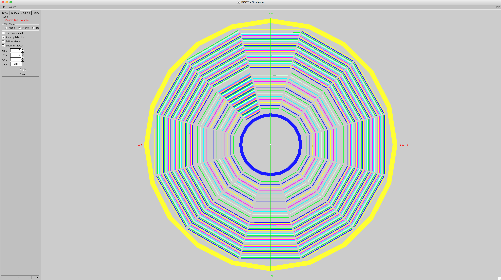
Sti TPC Geometry 2018, West Half
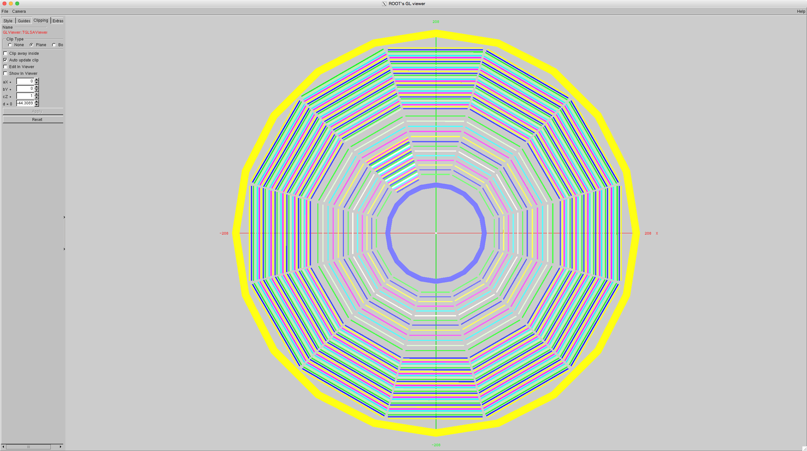
[Solved] Issue with T0 for iTPC tracks
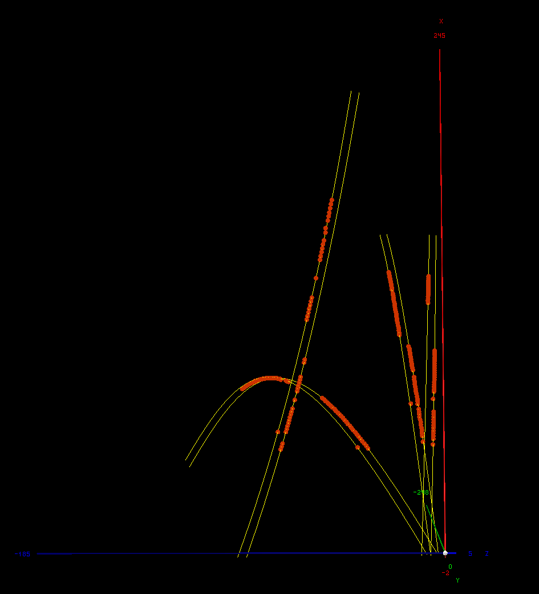
2017 Sti TPC geometry
- Compare two implementations: by TPC group (left) and by S&C group (right)
- Full-length Sti layers shown with grey color
- Half-length layers with an edge at $z = 0$ shown with magenta and purple colors
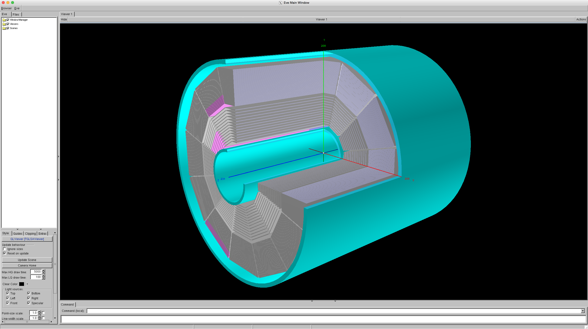
- None of the Sti layers should be split
- Problems with implementation by TPC group: Short layers exclude prompt
hits; unexpectedly split layers in two sectors
2018 Sti TPC geometry
- Compare two implementations: by TPC group (left) and by S&C group (right)
- Full-length Sti layers shown with grey color
- Half-length layers with an edge at $z = 0$ shown with magenta and purple colors
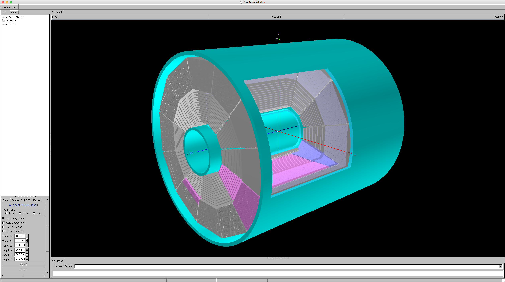
- Only inner layers in sectors 4 and 20 should be split
- Problems with implementation by TPC group: Short layers exclude prompt
hits; outside layers split in sectors 4 and 20 and split layers in sector 7
2019 Sti TPC geometry
- Compare two implementations: by TPC group (left) and by S&C group (right)
- Full-length Sti layers shown with grey color
- Half-length layers with an edge at $z = 0$ shown with magenta and purple colors
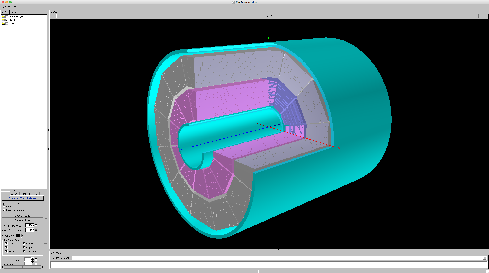
- None of the Sti layers should be split
- Problems with implementation by TPC group: Short layers exclude prompt
hits; inner layers split in sectors 4 and 20; split layers in sector 7